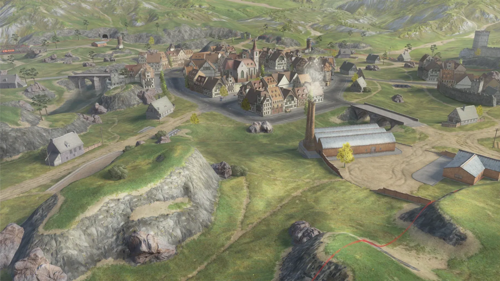

Встречный бой
За время боя, не превышающее семи минут, нужно уничтожить команду противника или захватить нейтральную базу. Учитывай базу при выборе позиции и смене фланга.
В Tanks Blitz семь игроков на стороне и короткий бой. Хорошая позиция помогает сохранить машину, поддержать союзника и вовремя перейти на другой фланг.
Каждый выход из укрытия должен иметь понятную цель.

За время боя, не превышающее семи минут, нужно уничтожить команду противника или захватить нейтральную базу. Учитывай базу при выборе позиции и смене фланга.
Победа достигается набором 1000 очков либо уничтожением команды противника. Следи за счётом режима вместе с положением машин на мини-карте.
Цели режимов: официальная справка Lesta ↗.
Материал для изучения: официальное руководство Tanks Blitz ↗.
Договорённость должна помогать принять следующее решение.
В команде из семи игроков обсудите общий фланг и поддержку. Лёгкий танк может наблюдать, тяжёлый — держать позицию, остальные — помогать с огнём и манёвром.
Сообщайте замеченную угрозу и намерение сменить фланг. Следите за мини-картой: в формате 7×7 союзник на другом направлении может быстро остаться без поддержки.
Выберите ситуацию и сравните варианты действий. Так разбор становится понятным упражнением, которое можно повторить.
Укрытие имеет смысл в контексте местности: разберись в типах карт и составь простой план.